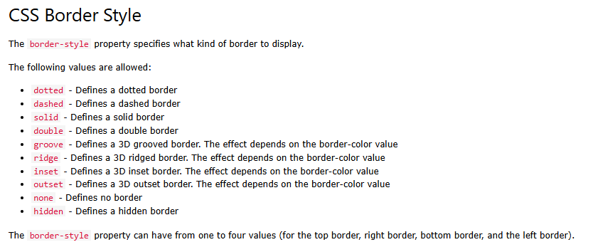

Mudar cor com o Inline
Outro título com Inline
Mudar cor e tamanho da fonte
Eu fui estilizado pelo Internal
Mais um
Texto editado com CSS Externo
Ordem do CSS
- Limão
- Uva
- Pêssego
- Manga
- Amora
Texto para a classe...
A classe serve para conjuntos de elementos...
Ela pode ser aplicada no CSS e JS.
Esse é um título usando ID.
Texto com id e classe
Texto com classe
Texto com seletor
Texto estilizado com nome da cor
Texto estilizado com valor hexadecimal da cor
Outro texto com cores em hexadecimal
Texto estilizado com RGB
Texto estilizado com RGBa
Texto estilizado com HSL
Texto de exemplo para as regras de background color (nome de cor)
Texto de exemplo para as regras de background color (hex)
Texto de exemplo para as regras de background color (rgb)
Texto de exemplo para as regras de background color (hsl)
Alterando opacidade somente do background
Esse título tem uma imagem!
Esse não tem padding
Esse tem padding
Padding só embaixo
Padding em cima e na esquerda
Texto com shorthand padding
Sem border box
Com border box
Borda
Borda 2

Border no chão e a esquerda
Elemento redondo arredondado
Exemplo de margin
Usando todos elementos do box model
Alinhando o texto a direita
Container
Texto alinhado dentro da div
aumento de letras
DIMINUIÇÃO DE LETRAS
Letras espaçadas
Mudando fontes
Mudando estilo da fonte
Mudando o tamanho da fonte
Display block
Display inline
A
B
C
Estou oculto
Static: não é afetado pelas propriedades top, right, bottom, left
Relative: é afetado pelas propriedades top, right, bottom, left e é posicionado de forma relativa a sua posição normal (static)
Fixed: é fixo ao viewport, então mesmo que a página seja scrollada ele não muda de posição
Absolute: pode ser posicionado em qualquer lugar da tela usando as propriedas top, right, bottom e left
Sticky: é posicionado com base no scroll do usuário como no fixed, porém, quando o elemento volta a sua posição original ele se torna relative